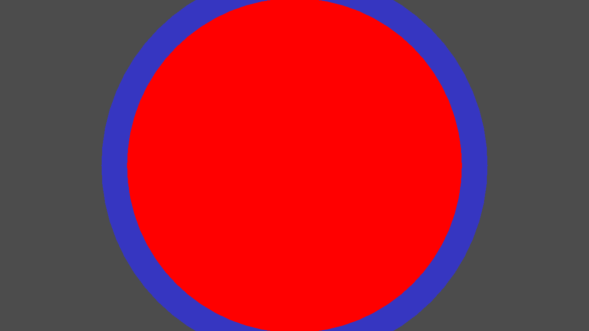
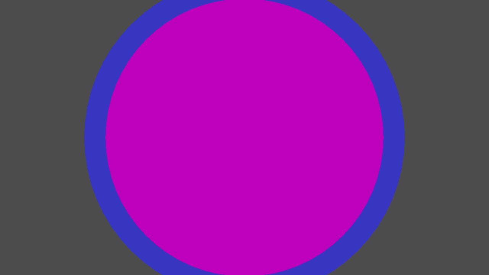
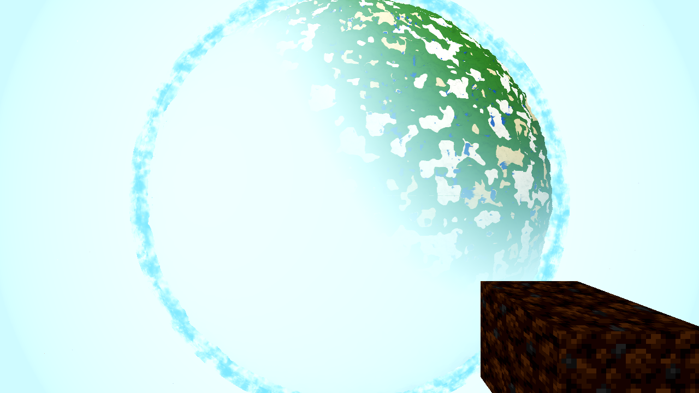
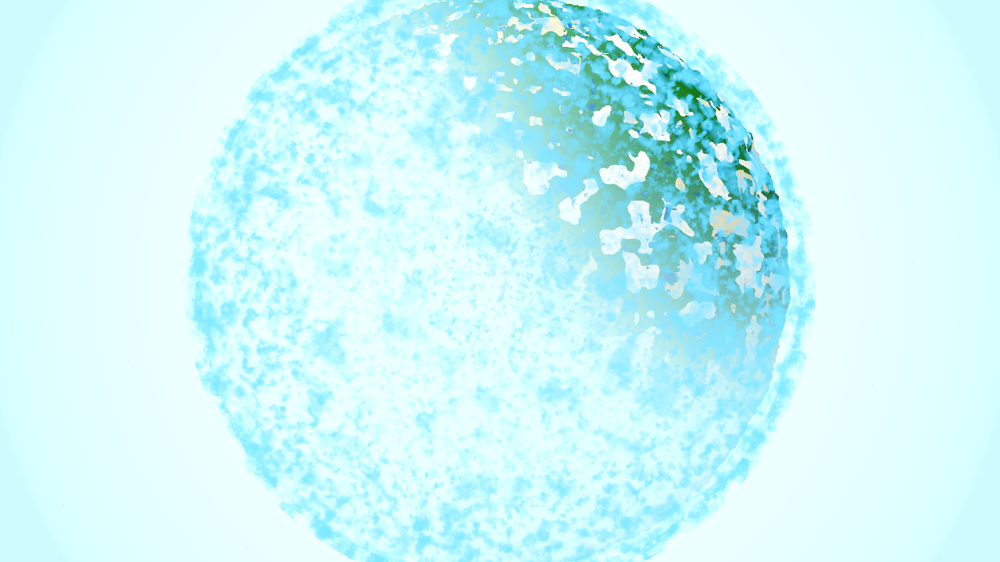

Verdict: all four defects fixed and proven; one prior-run bug found and corrected; all owned gates green. The previous run made the code changes and died before any gate, render or results page. This run verified the five file diffs, finished the missing work (the defect-2 fix was not started; the menu row, harness docs and architecture line were absent), found a logic bug in the prior run's defect-4 change (a no-op toggle — proven by probe), corrected it, ran the gates, captured the acceptance renders and measured.
Engine Godot 4.7.1 · llvmpipe Forward+ (proxy renderer — geometry/draw-order/layout evidence, not the shipped look) · config = the user's: R24/F83 (fog_far 332 / render_edge 400), T0.5, CLOUD_T0=411200, SAT_ALT=2600, nadir, 1280×720, SNAP_DRAIN=60 (AC-0417 R24 note), 1200 s wall, no AWECRAFT_LOGIC (the planet preset is self-contained).
| File | Assessment |
|---|---|
| godot/autoload/settings.gd | COMPLETE, correct. relief_shading bool, DEFAULT ON, sanitize_bool clamp in the clamp chain. Matches the shipped settings pattern. |
| godot/core/satellite_body.gdshader | COMPLETE, correct. u_relief (default 0.0): after the sRGB decode, texv *= 1.0 + 0.4*(texs.a - 0.5) inside if (u_relief > 0.5) — 0.0 short-circuits bit-identical; ±20 % centred on mid height; linear domain so hue is preserved. u_spec (default 0.0): SPECULAR = u_spec — the sheen removal. The haz limb term was correctly identified as the fog-wall bridge, not a sheen, and left in place. |
| godot/world/satellite_body.gd | COMPLETE, correct. Boot envs read once (AWECRAFT_RELIEF, AWECRAFT_SPEC), live Settings value for the relief, both uniforms pushed to all 12 face materials every tick in _tick_view (cloud_deck/limb_space pattern). |
| godot/player/player.gd | BUGGY — corrected this run. _vm_orbit_sync() (called from _process every frame) computed the orbit flag correctly (radial altitude ≥ Aero.atmosphere_height(), the one-home A) but the change-gate was inverted: if hand_root.visible == orbit: return then visible = not orbit. In every state the comparison passes or the assignment is a no-op (visible=true/orbit=true → return with the item still shown; visible=false/orbit=false → return with it still hidden). The fix was dead code. Proven by the vmorbit probe: 281 orbit frames, vis_before=true every frame, zero state changes. Corrected: compare against the desired state want_visible = not orbit. Re-probe: surface visible → orbit hidden → descent restored, ok:true. |
| godot/scenes/harness.gd | COMPLETE, correct. Planet-branch instrument: AWECRAFT_FPV_ITEM=<id> gives the frozen player the block, selects it and reparents sway_root to the preset camera so the orbital frame carries the held item (env-gated; unset = byte-identical). Used only for the before-frame. |
| Missing from the previous run (completed this run): the defect-2 fix was not started at all (no cloud_layer.gdshader / world.gd change) — implemented in godot/world/world.gd; the plan's Options row — added to godot/ui/menu.gd (CheckBox + sync + toggle, cloud_deck pattern); the harness env documentation — added to godot/HARNESS.md §2 (the §2 env prose is hand-maintained outside the generated blocks; harness_doc.py --check passes); the settings-layer line — added to godot/ARCHITECTURE.md §2 (the row documents each settings bool; a task that leaves it wrong is not done). | |
The sheen term: the body material is a lit spatial shader, and its engine-default SPECULAR 0.5, lit by the sun's DirectionalLight3D, is the term that gives the surface the glossy cast. No custom rim/fresnel/sheen term exists in the shader (the haz limb term is the fog-wall bridge — it stays). Fix: SPECULAR = u_spec, shipped 0.0 (matte); AWECRAFT_SPEC=0.5 restores the pre-fix sheen for the A/B only. Not a look preference — the user's phrase is the specification.
Mechanism (measured, this build): every cloud shell node and every body face node sits at the planet centre (0,−R,0), so the engine's transparent sort — per-instance key = camera-to-NODE distance + sorting_offset, larger key draws later — is a perfect tie across all 15 transparent instances (12 body faces + 3 cloud shells + the star), and the tie-break alone decides who covers whom. Verified with a four-case synthetic matrix (two concentric transparent shells at one origin, camera nadir; render_priority does not exist in 4.7.1 — introspection returned null — while sorting_offset/sorting_use_aabb_center do):


Why it flickered: cull/rebuild state moves which instances are present in the transparent pass per frame, so the tie-break winner changes frame to frame — clouds "flash in and out" on the near face, while at the limb the geometry separation keeps the clouds visible regardless. Fix (world.gd, one-time push in _ac0401_push): sorting_offset = +2.0 on each cloud shell node — the AC-0401 2 m idiom applied to the sort key — so the weather layer sorts deterministically after every body face at every altitude. Depth is untouched (the cloud writes no depth; the body keeps depth_draw_always — no thin-veil holes), and the AC-0401 near-tier/body radial ordering (opaque pass) is unchanged. Like AC-0401, this is a defect fix, not a look option — no switch ("shipping the flicker behind a toggle is not an option").
Fix: height-based modulation of the body's sampled colour — texv *= 1.0 + 0.4*(texs.a - 0.5) — where the face textures' alpha channel carries the height (A = round(H·255/HMAX), HMAX=384; verified on the shipped bake: 12 faces, mean α=104 ≈ H156, p5–p95 α74–124 ≈ H73–192 — this world's terrain sits mostly below the mid height, so the read is a baked-shadowed lowland with brightened peaks — exactly the map-renderer look). Conservative ±20 % amplitude centred on the mid height; applied in the linear domain after the sRGB decode. Switch: Settings relief_shading, DEFAULT ON (the user ordered the change — the AC-0398/AC-0401 precedent for user-asked look changes), Options-page row, live re-push on toggle, AWECRAFT_RELIEF=0|1 A/B. u_relief=0 short-circuits bit-identical.
What it was: the viewmodel (hand + item) has no altitude awareness — it is a surface instrument drawn from the preset camera "tens of kilometres from the ground" (the user's screenshot: a large tan quad in the corner; a prior triage had closed it as a stale SIZE complaint — the screenshot is the authority: the defect is that it renders at all).
Fix: player._vm_orbit_sync(), every frame in _process: radial altitude = |pos − (0,−R,0)| − R (the exact sync_flight_band expression, so it holds for a frozen player too) ≥ Aero.atmosphere_height() (the one-home "how far up is space", A=1200 m) → hide hand_root (the common parent of fist/item/tool — one place hides the whole viewmodel), restore on descent. AWECRAFT_VMORBIT=0 forces the pre-fix always-visible state for the before-frame. The prior run's version of this exact function was a no-op (inverted change-gate, §1) — corrected this run; see the probe evidence below.


Steps _s20/_s40/_s60 (multi-frame drain, same config): the before steps are pixel-identical to each other and the after steps pixel-identical within their run — in the frozen harness the order is stable; the user's flicker is the live-session symptom of the tie (cull/rebuild state moves the winner per frame). The acceptance evidence for defect 2 is therefore the before state (clouds hidden on the near face — measured below) vs the after state (clouds stably drawn over the body) plus the clouds on/off pair.
Control pair for a clean read (both AWECRAFT_CLOUDS=0, so no cloud confound): ac0421-relief-off-clouds-off.png (RELIEF=0, the exact pre-AC-0421 flat sample) vs ac0421-after-orbit-clouds-off.png (RELIEF=1, shipped). 9.0 % of all pixels differ; the ×12-amplified difference (diff_relief_amp12.png, grey = identical) is structured and terrain-following — lowlands darkened, the rare high-ground texels brightened — not noise. In the crisp (non-hazed) terrain band 20.4 % of pixels are darker by 1–4/255 (the haze mix attenuates the per-texel modulation — the user's own R24/F83 fog softens the disc, so the relief rides under it exactly like everything else); max +1/255 brightening (high-ground texels). The expected pre-haze modulation for this world is mean ≈ −3.7 % (mean H≈156 < mid height 192) to −7 % in the lowlands — consistent with the measured haze-attenuated −0.72/255 quadrant mean (−0.28 %). Terrain-box luminance: mean 193.4→192.6, std 64.8→65.2 (relief off→on, no clouds).
| Quantity | Before (defects) | After (shipped) | Reading |
|---|---|---|---|
| Near-face box (350,200,640,500) luminance std — defect 2 | 1.07 (before) · 1.08 (prefix, pre-fix) | 7.38 (after) · 1.12 (after, clouds off) | Featureless → textured only when clouds are on AND the fixed order is in place: cloud drawn over the body. |
| Cloud coverage added (on vs off, |Δlum|>20, 1/4 sample, frame-wide) | — | 10.75 % (7.16 % in the near-face box) | Weather layer present over the disc in the fixed state; absent with clouds off. |
| Held-item corner box (900,520,1270,710) dark-pixel fraction — defect 4 | 0.895 (dark dirt block, mean lum 38.2) | 0.000 (sky only, mean lum 243.7) | The item renders in the before frame and not at all in the after frame. |
| Relief control pair (relief off→on, clouds off) — defect 3 | 9.0 % of pixels differ; structured, terrain-following (×12 diff); quadrant mean Δ −0.72/255; crisp band: 20.4 % darker by 1–4/255, max +1/255; expected pre-haze mean −3.7 % (mean H≈156 < 192 mid). | Height modulation present, conservative, under the user's fog — the flat pastel read is gone. | |
| Specular — defect 1 | SPECULAR 0.5 (A/B env) | SPECULAR 0.0 (shipped) | The engine-default gloss term removed for this material; matte read. |
| Gate | Command / log | Exit status | Result |
|---|---|---|---|
| G0 (zero SCRIPT ERROR AND zero SHADER ERROR via gate_census.py AND exit 0) | final smoke boot, battery_final.log | godot rc=0 | census: SCRIPT ERROR 0, SHADER ERROR 0 — ok (the paired check; the engine exits 0 on script failures). |
| Smoke battery player;interact;light;fluids;genhash | battery_final.log (same run) | rc=0 | aggregate ok:true (96× "ok":true across the arms), 260 s. |
| genhash 25/25 byte-identical (world.gd touched) | battery_final.log | — | 25/25 identical to the current standing set (matches the AC-0419-r2 / AC-0422 reference logs; the AC-0367 log is an older rebase). |
| vmorbit probe (held-item fix, rigorous: surface → orbit → descent) | vmorbit4.log (temporary arm, removed after — evidence in the log) | rc=0, 0 errors | RESULT {"vmorbit":{"surface_vis":true,"orbit_vis":false,"descent_vis":true,"ok":true}} — visible at the surface (alt 89 < A=1200), hidden in orbit (alt 2600 ≥ A), restored on descent (alt 200 < A). The same probe on the prior run's code returned ok:false (orbit_vis true) with 281 no-op sync frames — the bug, then the fix, in one instrument. |
| shaderforce (every shipped .gdshader forced through Forward+; 12/12 standing) | shaderforce2.log (fwdshot recipe: xvfb + lavapipe) | rc=0 | RESULT ok:true, count:12, failed:[], 12× verdict=ok; census 0/0 ok (a lone grep hit was the arm's own note text, not an error line). |
| Before/after render runs | before-orbit.log / after-orbit.log / after-orbit-clouds-off.log / relief-off-clouds-off.log | all rc=0, 0 errors | SNAP file existence checked each run; RESULT confirms the user's config (alt 2600, nadir, body LOADED, fog_far 332 / render_edge 400). |
Heavy gates (farab, ladder, meshprobe, halo, lightstate, r16, boundary r4) are the coordinator's background job — not run here per the task split. Debt check for them: the changes are render-side (two body-material uniforms, a node sorting_offset, a viewmodel visibility toggle, one settings bool, harness instrumentation) — no streaming, scheduling, C++/gdext, data/save-format or worldgen change, so no standing-value re-establishment is owed (genhash is the world/* gate and is 25/25).
ac0421-before-orbit.png (+_s20/_s40/_s60) · ac0421-after-orbit.png (+_s20/_s40/_s60) · ac0421-after-orbit-clouds-off.png · ac0421-relief-off-clouds-off.png · ac0421-prefix-orbit-clouds-on/-off.png (+.log) · tie_A_nooffset / tie_B_cloud_minus1000 / tie_C_cloud_plus1000 / tie_D_body_minus1000.png · diff_relief_amp12.png · gate logs: .scratch/AC-0421-gates/{battery_final,vmorbit4,shaderforce2,before-orbit,after-orbit,after-orbit-clouds-off,relief-off-clouds-off}.log